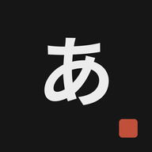

Tu racha, tus medallas y el recordatorio diario.
Supera el reto de hoy (10 aciertos en el día, en práctica libre o en el test) para sumar un día a tu racha. Si un día no lo superas, la racha vuelve a 0: las medallas que ya tienes se quedan, pero las nuevas se ganan con días seguidos contados desde 0 (la primera con 1 día, la segunda con 2 y después una cada 2 días: 4, 6, 8… hasta 18). Cada medalla trae su paleta, con su fondo y sus efectos. Toca una medalla para usar su paleta.
Será tu reto diario: superarlo suma un día a tu racha 🔥. Puedes cambiarlo cuando quieras tocando 🔥.
Cada kana con su romaji.
Se abrirá a pantalla completa como una app más, funcionará sin conexión y podrá avisarte cada día.
Un aviso diario a la hora que elijas para hacer tu reto de kana. Si ese día ya lo has superado, no te molestamos.
Puedes cambiar la hora o desactivarlo cuando quieras tocando 🔥.